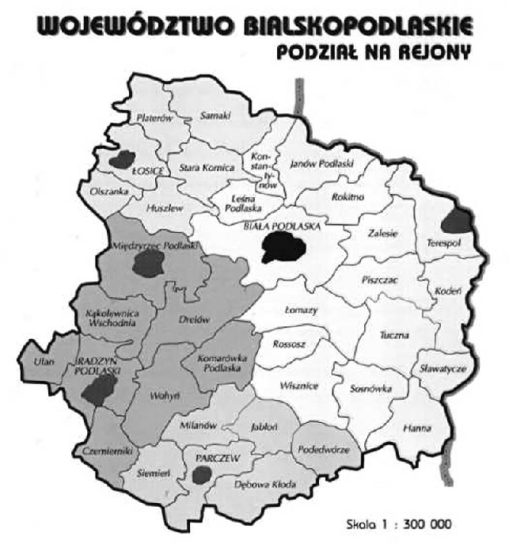

Holocaust - termin zaczerpnięty z greki (holocauston - całopalenie), oznaczający zorganizowane przez III Rzesze ludobójstwo Żydów.[1]
Bilans strat istnień ludzkich nie mówiąc już o stratach moralnych, materialnych i kulturalnych, jakie poniósł naród żydowski w okresie II wojny światowej jest ogromny. Dokładna liczba zamordowanych nigdy nie została ustalona. Gdyby przyjąć ustalenia przytoczone w leksykonie historycznym, że w obozach masowej zagłady tzn. Oświęcimiu – Brzezince zginęło od 1-3 miliona Żydów, Treblince około 760 tyś., Bełżcu około 600 tyś., Chełmnie około 300 tyś., Majdanku około 250 tyś., Sobiborze około 250 tyś., to szacunkowa liczba ofiar holocaustu w Polsce wynosiłaby od 3160000 do 5160000.[2] Pamiętać należy jednak i o tym, że Żydzi ginęli wszędzie, w gettach, obozach pracy i podczas licznych egzekucjach, szczególnie częstych w 1942 r. Niestety nikt dotychczas nie podjął próby ustalenia faktycznej liczby zabitych Żydów w dystrykcie lubelskim w egzekucjach oraz na skutek warunków panujących w gettach i bardzo licznych obozach pracy. Tragiczna zagłada ludnosci żydowskiej w regionie bialskopodlaskim tzn. na obszarze obecnego województwa bialskopodlaskiego, mimo istnienia dość bogatych materialów zródlowych także, jak dotąd nie doczekala się pełnego, jednolitego opracowania. Dlatego też powodowana intencjami poznawczymi oraz chęcią zapełnienia istniejących luk w mojej wiedzy na temat historii i zagłady obywateli polskich pochodzenia żydowskiego postanowiłam podjąć wyżej wskazany temat.
Założeniem niniejszej pracy jest ukazanie zjawisk w sposób ilościowy i jakościowy na przykładzie obecnego województwa bialskopodlaskiego, które w polityce okupanta, ze względu na położenie geograficzne zajęło istotną rolę. Praca moja jest przede wszystkim próbą przedstawienia rozmiarów zbrodni dokonanych na ziemiach bialskopodlaskich ale także, choć już w znacznie węższym zakresie stanowi wyjaśnienie istoty polityki okupanta, jej cele, sposoby realizacji i skutki.
Terytorialnie praca dotyczy województwa bialskopodlaskiego, którego zasięg i rozmiary przedstawia poniższa mapa.

Województwo bialskopodlaskie, podział na gminy, 1996 r.[3]
Składa się z trzech rozdziałów. Pierwszy z nich poświęcony jest historii Żydów na Podlasiu i dotyczy takich kwestii jak osadnictwo, gospodarka i życie społeczno – polityczne. W napisania tego rozdziału pomogły mi następujące źródła: Studia Podlaskie pod redakcją Haliny Parafinowicz, Jerzego Urwanowicza, Andrzeja Wyczańskiego, a w szczególności opracowania Anatola Leszczyńskiego Z dziejów Żydów Podlasia (1487-1795), Zenona Gildona Ludność żydowska w miastach województwa podlaskiego w końcu XVIII wieku, Zbigniewa Zaporowskiego Ludność żydowska w Białej Podlaskiej w latach 1918-1939 i Jakuba Goldberga Żyd i karczma miejska na Podlasiu w XVIII wieku, Studium osadnicze, prawne i ekonomiczne i opracowanie Anatola Leszczyńskiego Żydzi ziemi bialskiej od połowy XVII wieku do 1795, Informator Powszechny Rzeczypospolitej z Kalendarzem Policji Państwowej na rok 1922, broszura autorstwa Jerzego Sroki Ślad pod redakcją Henryka Kusia, cykl Opowieści z Podlasia autorstwa Jerzego Sroki zamieszczonych w prasie regionalnej Słowo Podlasia, Słownik Biograficznym tego samego autora także zamieszczony w Słowie Podlasia oraz praca Stanisława Jadczaka Biała Podlaska dzieje miasta i jego zabytki.
Rozdział drugi poświęcony jest systemowi okupacyjnemu Niemiec na terytorium województwa i w szczególności mówi o działaniach wojennych w 1939 r., administracji cywilnej, policji i wehrmachcie. Do jego napisania posłużyłam się następującymi źródłami: Rok 1939 na Podlasiu pod redakcją Edwarda Jasińskiego i Henryka Mierzwińskiego i zamieszczonym w nim opracowaniu Edwarda Geresza Działania wojenne na Podlasiu we wrześniu 1939 r., Polityka III Rzeszy w okupowanej Polsce t. I i II, autorstwa Czesława Madajczyka, Waldemara Tuszyńskiego Policyjny i wojskowy aparat okupacyjny zamieszczony w Zeszytach Majdanka t. III, Józefa Kasperka Początki organizacji i działalności urzędów pracy na Lubelszczyźnie (październik 1939-styczeń 1940) zamieszczonym w Zeszytach Majdanka t. VI, Józefa Kasperka Zarys organizacyjny Arbeitsamtów w Dystrykcie Lubelskim w latach 1939-1944 zamieszczonym w Zeszytach Majdanka t. VII, oraz Zbrodnie hitlerowskie w regionie bialskopodlaskim 1939-1944 pod redakcją Mariana Kowalskiego a w szczególności opracowania Jerzego Sroki Hitlerowski aparat terroru i zbrodni, broszura autorstwa Janusza Odziemkowskiego Katownia Gestapo w Białej Podlaskiej, wspomniana wcześniej broszury Jerzego Sroki Ślad oraz praca Stanisława Jadczaka Biała Podlaska dzieje miasta i jego zabytki, praca Jerzego Sroki Biała na Podlasiu, oraz prasa regionalna Prawda Białej Podlaskiej z 1939 roku.
Rozdział trzeci dotyczy szczególnie tematu pracy i poświęcony jest zagładzie ludności żydowskiej na Podlasiu. Posiada on 4 podrozdziały mówiące o formach dokonywanych zbrodni a są to getta, obozy pracy, egzekucje i działania batalionu, który wyjątkowo okrutnie wpisał się do kart historii województwa. Przy napisaniu tego rozdziału posłużyłam się następującymi źródłami: Janina Kiełboń Migracje ludności w dystrykcie lubelskim w latach 1939-1944, Leksykon historyczny XX wieku pod redakcją Bożeny Bankowicz, Marka Bankowicza, Antoniego Dudka, Biuletyn Głównej Komisji Badania Zbrodni Hitlerowskich w Polsce, Zbrodnie hitlerowskie w powiecie Biała Podlaska w latach 1939-1944 pod redakcją Mariana Kowalskiego, wydanych przez Towarzystwo Przyjaciół Nauk w Międzyrzecu Podlaskim, a w szczególności referatami Jerzego Sroki Hitlerowski aparat zbrodni i terroru w powiecie Biała Podlaska 1939-1944 i Eugeniusza Wińskiego Eksterminacja mieszkańców powiatu Biała Podlaska w latach 1939-1944, Zeszytów Majdanka t. III, opracowanie Leszka Siemiona Egzekucje na Lubelszczyźnie i Więzienia i obozy w dystrykcie lubelskim w latach 1939-1944 autorstwa Edwarda Dziadosza i Józefa Marszałka, pracą Zbrodnie hitlerowskie w regionie bialskopodlaskim 1939-1944 pod redakcją Mariana Kowalskiego i zamieszczonym w niej opracowaniem Jerzego Doroszuka Zagłada obywateli polskich pochodzenia żydowskiego, pracą amerykańskiego historyka Daniela Jonaha Goldhagena Hitler’s Willing Executioners, Ordinary Germans and the Holocaust, oraz szeregiem artykułów z prasy jak np: Mordercy z gorliwości autorstwa Adama Krzemińskiego zamieszczony w Polityce, Smutek kamiennych tablic autorstwa Waldemara Piaseckiego w Sztandarze Ludu, Schronisko ludności żydowskiej w Słowie Podlasia, Mówią świadkowie i dokumenty także w Słowie Podlasia, Marsz śmierci z Lublina do Białej autorstwa Andrzeja Pawluczuka w Dzienniku Lubelskim, Ich już nie ma autorstwa Stefana Grodzickiego w Słowie Podlasia, Co ludzie powiedzą Marka Wasiluka w Słowie Podlasia oraz zeznaniami świadków wydarzeń z okresu II wojny światowej zebranymi przez Okręgową Komisję Badania Zbrodni Hitlerowskich w Lublinie.
Praca niniejsza napisana została pod kierunkiem prof. dr hab. Edwarda Olszewskiego jako praca magisterska. Na jej ostateczny kształt wpłynęły uwagi promotora, któremu składam serdeczne podziękowania za okazaną pomoc. Chciałam tu także bardzo podziękować dyrektorowi Wojewódzkiej Biblioteki Publicznej Panu dr Jerzemu Flisińskiemu, oraz wszystkim pracownikom Biblioteki Regionalnej za pomoc w udostępnieniu potrzebnych materiałów.
[1] Bożena Bankowicz, Marek Bankowicz, Antoni Dudek, Leksykon historyczny XX wieku, Kraków 1996, Wydawnictwo GEO, s. 218.
[2] Ibid.
[3] Informator samorządowy województwa bialskopodlaskiego, Express Press, Lublin 1996.